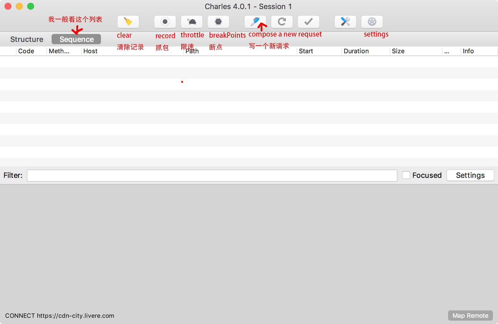
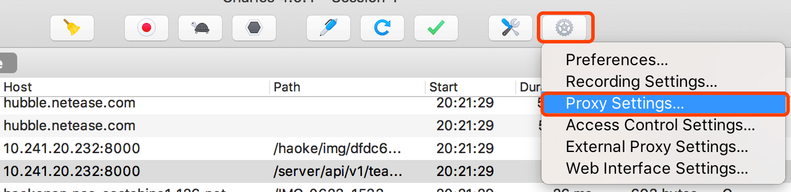
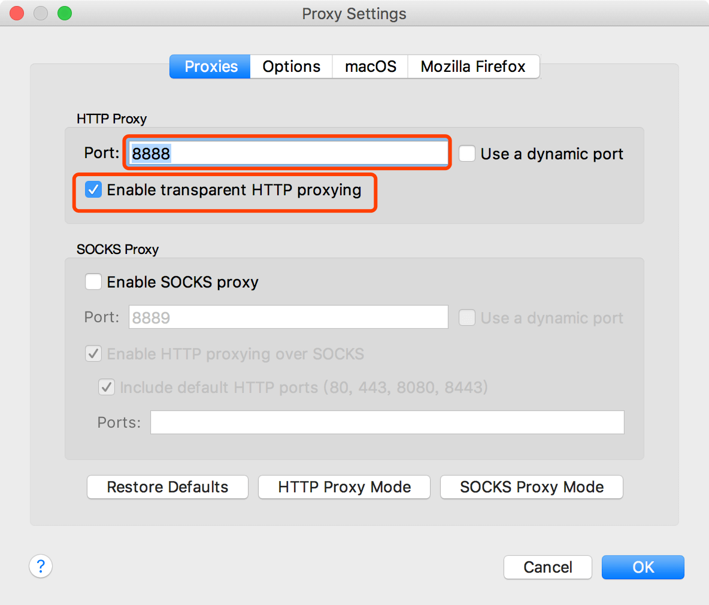
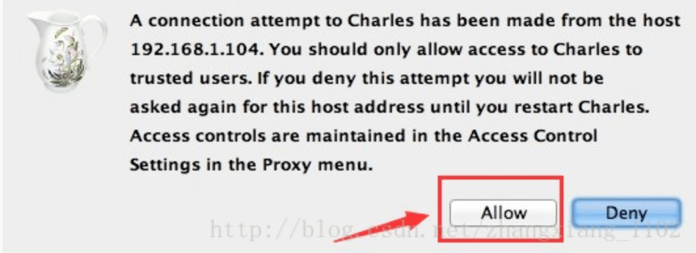
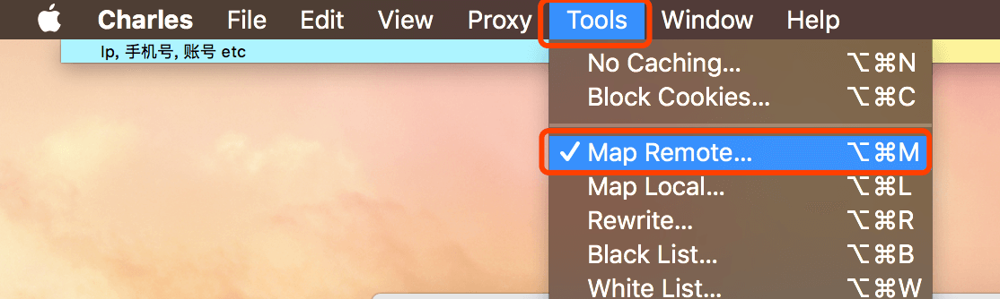

前言
请不要吐槽我的标点,
我就喜欢这样,另外,这是百度输入法的锅 ←_←
本文写给萌新,请看清分类,不喜请右上角
欢迎补充,现在这只是极简教程,以后说不定可以补充成《深入浅出charles》也说不定呢(滑稽)
正文
准备工作
可以去官网下载最新版(收费) https://www.charlesproxy.com/
至于怎么破解不是本文的重点,自己动手搜吧~
可以先下官方正版来使用,每次打开会有10s的等待,不过不影响基本使用
charles基本介绍
官网上有这么一段介绍:
Charles is an HTTP proxy / HTTP monitor / Reverse Proxy that enables a developer to view all of the HTTP and SSL / HTTPS traffic between their machine and the Internet. This includes requests, responses and the HTTP headers (which contain the cookies and caching information).
通过谷歌机翻可得大概的含义:
Charles是一个HTTP代理/ HTTP监视器/反向代理，使开发人员能够查看其机器和Internet之间的所有HTTP和SSL / HTTPS流量。这包括请求，响应和HTTP标头（包含cookie和缓存信息）。
总得来说谷歌翻译挺牛逼的~
那么,对我等小前端来说charles的就是用来代理和抓包的,接下来我也会针对这两点展开介绍,另外还会教大家怎么代理手机的请求,这个相当实用~
打开charles的软件主界面能看到这个

主界面的几个常用功能按钮我标注了,有些功能比如写新请求可以自己试试,对于请求出错时的调试很有帮助
抓包
简单来说就是获取本机所有的http请求
在打开record开关的情况下 可以在Sequence列表里看到炒鸡多的请求冒出来
我放个图
可以在下方request和response区域内找自己想看的内容,我本来也不太懂,直到我被人指着鼻子骂说从来没见过你这么差的前端!!
然后我就好好补了一下header, cookie, session的相关知识~
不过这些内容在浏览器的network部分也都能看到,所以并不是很牛批
比较牛啤实用的是给手机连代理和抓包
手机连接charles
先说一下基本原理,就是手机wifi代理连接电脑ip的某个接口,然后手机上所有的请求都会过一遍电脑上的charles,那么平时比较难调试的手机H5请求就能很方便的操作了
- 前提是手机和电脑在同一wifi下
- 获取本机ip,window下cmd用
ipconfig指令获取,mac可以看wifi设置
- charles部分的配置: settings => proxy settings

port就用默认的8888好了,下面的选项勾上

macOS或者Windows的选项,勾上框选的两项
- 手机的配置:
找到和电脑相同的那个wifi, 点右上角的叹号,安卓手机的操作不太统一,有些是长按,有些是点按,大家自己探索~
找到http代理选项,选手动,填入自己的ip和8888端口号,安卓一般需要点开高级设置才能找到
- 然后在你的手机上随意打开一个网站
会看到类似这样的弹窗,必须要点allow,我这里不是第一次连弹不出来..

接下来你手机上的请求就能被抓取了, 比如我打开一个网站http://haoke.163.com就可以在电脑上看到相应的静态资源请求
这里主要是代理http的请求,https就不能直接解析了
至此,就是手机连接charles代理的过程,结合下一节的http代理就可以实现在家调试线上页面了~
代理
代理的原理其实我说不清楚~举例来说原来线上一个网页的html静态资源路径是这样的http://online/nichousha/index.html
而我希望用我本地的资源替代(本地我有node服务器把资源放到localhost某个端口下)http://localhost/index.html 或者 http://<本机ip>/index.html
那么我就希望把http://online/nichousha/替换为http://localhost:8000/
那这一步替换charles可以帮我们做到,也就是代理的过程
所以你理解了替换这个概念,相关的配置也就很简单了
- 找到Tools => Map remote (较新系统版本的mac在最上面,window在软件菜单栏很好找)

点add新增
把上面的例子的替换过程配置到里面
这样就是一个最基本的代理过程←_←
感觉云里雾里?还是实际举个栗子吧
我这儿自家官网原来长这样
然后我通过charles代理了本地资源(这里代理了根目录下 html, js, css, 图片文件)
我就可以把官网改成这样了(两次都是在haoke.163.com这个域名下访问的)
一般代理前端资源以后会有缓存,可以强制刷新就能看到代理后的效果了(ctrl+f5)
同样的,可以反向代理解决跨域问题,大家回忆替换这个概念,就是把本地域名请求替换成目标服务器的请求:http://localhost/server/ => http://target.com/server/
这里就不展开了,自己在实际工作中多试几次就理解了
需要注意的是,charles代理的配置项先后顺序是有差别的,在前面的配置项先生效
后记
更多功能和用法就留给大家自己去发掘吧~我作为前端还是相当推荐这款工具的,可视化界面和容易理解的操作,就酱~